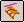
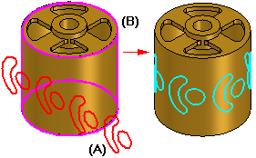
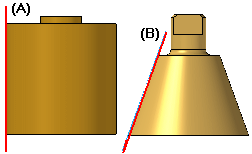
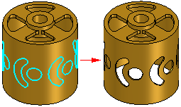

Wrap Sketch command
Use the Wrap Sketch command

to wrap sketch elements (A) around one or more surfaces (B). You can select individual sketch elements, a chain of sketch elements, or the entire sketch. The wrapped elements are associative to the original sketch elements.
When you wrap sketch elements onto a developable surface, such as a cylinder or a cone, there is little or no distortion with respect to the original sketch elements. When you wrap sketch elements onto a doubly curved surface, such as a torus, there may be some distortion.
The sketch plane must be tangent to one of the input surfaces. For example, proper reference plane tangency to a cylinder (A) or cone (B) is as shown

If the input surface dimensions change, the wrap sketch feature can fail to recompute properly. To avoid this, you can use driving dimensions, geometric relationships, or variables to ensure that the sketch plane remains tangent to the input surface.
After you wrap a sketch onto a surface, you can use the Normal Protrusion or Normal Cutout commands to construct a protrusion or cutout feature using the wrapped elements.
